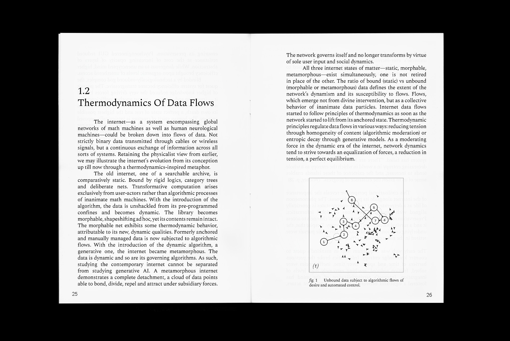

Cyberspace Heat Death is an essay and printed publication on the role of algorithmically-driven internet in the crisis of cultural innovation. In the light of the algorithmic paradigm shift, the problem of cultural stagnation is contextualized through a novel framework, borrowing from the logic of entropy. The text facilitates a broad understanding of this problem through the application of thermodynamic principles to data flows. Culture's vulnerability to the internet's “entropic death drive” is examined through the philosophies of Elisabeth Grosz, Gilles Deleuze and Bernard Stiegler. The thesis strongly critiques the tendency towards replication and advocates for a renewed cultural ontology and “intensive” art practices. Ultimately, this work advocates for a shift in perspective, recognizing the unique yet underutilised quality of art to generate Differences and understand its potential in resisting cultural homogeneity.
“The unique qualities of art differentiating it from other disciplines lie outside the realm of entropy and therefore, are inert to algorithmic subjectification. The problem of contemporary culture is perhaps a deficiency of those qualities, responsible for generating novel outcomes. It might be that arts are misunderstood in their ontology. A painter should not be concerned with the invention of photography, just as a writer should not be concerned with the invention of automated text generation. A computer can never generate anti-entropic outcomes, since it's an automatized process. It lacks the inventive quality, the de-automatization necessary for novel outcomes, The true danger behind AI is not that it will 'outpace' human intelligence or creativity, it is that we are conditioned to believe it will.”
The full essay will soon be available for free on Anna's Archive as a .pdf and .epub.

Aleksy Domke © 2026 CC BY-NC-SA 4.0